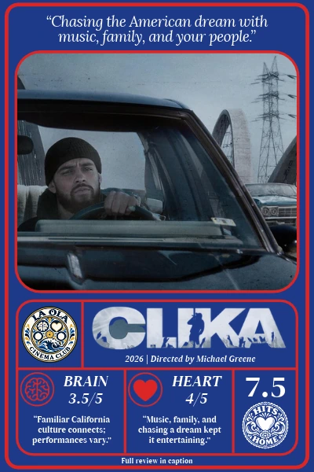

La Ola Cinema Club
From the collection
Clika
“Chasing the American dream with music, family, and your people”
Clika finds its appeal in a dream that feels close to home: making music with your friends, building something for your family, and trying to turn what you love into a future. The struggles along the way give that ambition weight, but the movie keeps the experience fun and entertaining from beginning to end.
There’s a particular pleasure in seeing California communities and familiar places represented onscreen. The setting feels recognizable, and the Latin culture is a big part of what makes the film connect. You’re watching people pursue something meaningful in a world you can recognize, which makes it easier to get invested in where they’re headed.
The music, friendships, and family ties give that pursuit its appeal. Chasing a dream involves the people beside you as much as the person trying to make it happen, and that shared experience is what makes this an enjoyable watch.
The acting is uneven. Some characters feel less convincing than others, and those weaker performances stand out. Fortunately, the stronger ones do enough to carry the film through those moments without losing the connection that makes it work.
Clika leaves a good feeling. An entertaining story about ambition and the people you bring along with you, with a welcome sense of recognition for the culture and communities it puts onscreen.
From the Brain
Familiar California culture connects; performances vary
From the Heart
Music, family, and chasing a dream kept it entertaining

Hits HomeThe personal one: a feeling, memory, or truth that stays with us.